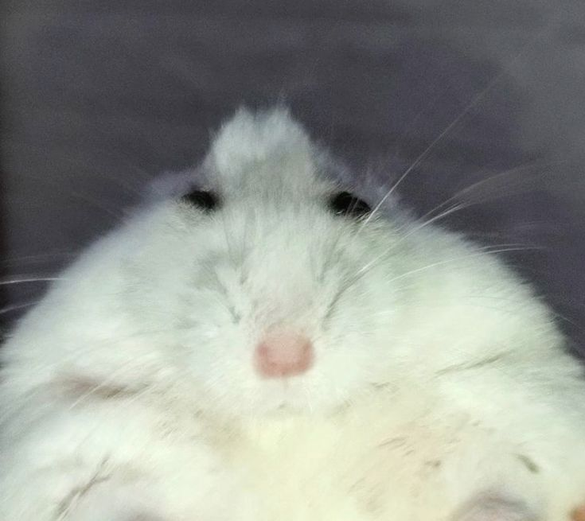
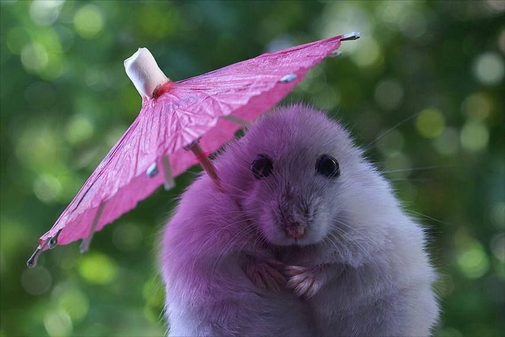

Meet the Team

Mārcis Soms-Sakne
Consultant

Dāvis Birzgalis
Researcher

Simona Ansone
Web Developer
Our Mission:
BirdScope is dedicated to promoting bird conservation and education through our
innovative platform.
We aim to connect bird enthusiasts with local species and migration patterns.
Our Timeline:
- 2021 - 2026: Dāvis started making bird observations, taking note of the diversity among them.
- 2023: A Scientific Research Paper was made regarding how avian diversity and weather is strongly connected.
- 2024: Critical acclaim of the Paper, leading to a greater focus on how bird diversity has changed.
- 2026: The idea of BirdScope was born and the team started working on it.